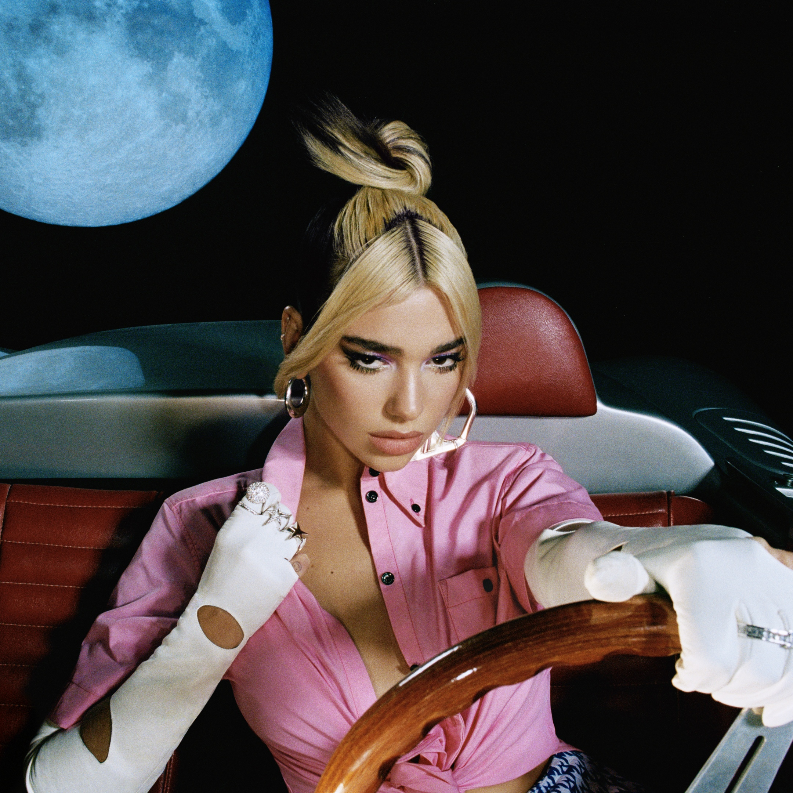

Второй студийный альбом Дуа Липы, премьера которого состоялась 27 марта 2020 года.
Пластинка насчитывает 11 треков, среди которых такие хиты как Don't Start Now, Levitating, Break My Heart.

Второй студийный альбом Дуа Липы, премьера которого состоялась 27 марта 2020 года.
Пластинка насчитывает 11 треков, среди которых такие хиты как Don't Start Now, Levitating, Break My Heart.
Future Nostalgia (The Moonlight Edition)
Переиздание второго студийного альбома Дуа Липы, выпущенное 12 февраля 2021 года, куда входят коллаборации с Angèle, Miley Cyrus, JID, DaBaby, J. Balvin, Bad Bunny и Tainy.